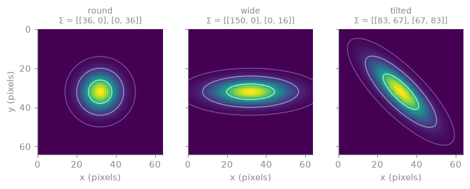
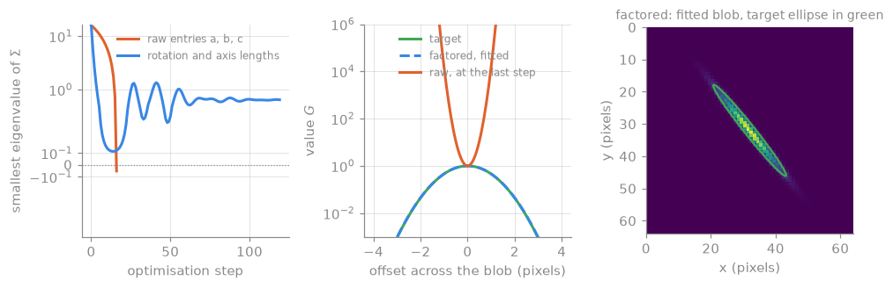
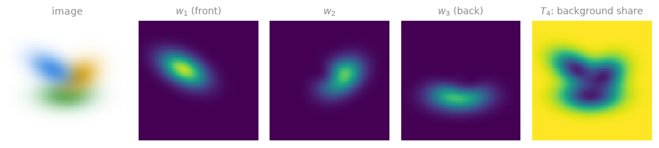
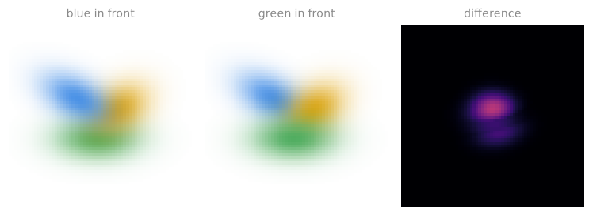
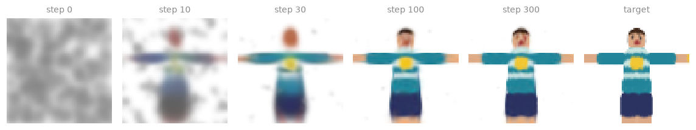
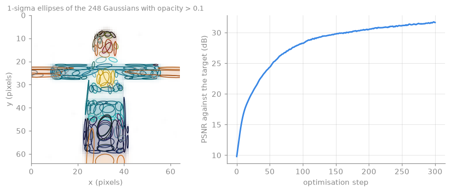

2D Gaussians and alpha compositing: a renderer in thirty lines#
What you will learn
What a Gaussian is as a drawing primitive: a centre, a covariance, and the ellipse they describe.
Why the covariance is stored as a rotation and two axis lengths, and what breaks when it is not.
How overlapping Gaussians become one picture: alpha, transmittance and front-to-back compositing.
That the whole renderer is differentiable, so a picture can be fitted by gradient descent.
Prerequisites: Lesson 0 and Lesson 1. You need matrix products and the idea of an eigenvector. Everything in this lesson is flat: there is no camera and no third dimension yet. Lesson 2b adds them.
1. A Gaussian is a soft blob#
The avatar of this course is made of Gaussians. In an image, one Gaussian is a soft elliptical spot. It has a centre \(\mu\) (a point, in pixels) and a covariance \(\Sigma\) (a symmetric 2 x 2 matrix) that sets its size, its elongation and its direction. Its value at a pixel \(x\) is
The number \(m = \sqrt{d^\top \Sigma^{-1} d}\) is the distance from the centre, measured in units of the blob’s own width along that direction. It is called the Mahalanobis distance. At the centre \(m = 0\) and \(G = 1\). On the curve \(m = 1\) the value has dropped to \(e^{-1/2} \approx 0.61\), and that curve is an ellipse. We call it the 1-sigma ellipse. A statistician would divide \(G\) by a constant so that it integrates to one. Splatting does not: the peak value is 1, and a separate number, the opacity, will scale it.
def gaussian(xy, mu, Sigma):
"""G(x) = exp(-0.5 d^T Sigma^-1 d) at points xy (P, 2) for one Gaussian. Returns (P,)."""
d = xy - mu
m2 = torch.einsum("pi,ij,pj->p", d, torch.linalg.inv(Sigma), d) # squared Mahalanobis distance
return torch.exp(-0.5 * m2)
H = W = 64
xy = cu.pixel_grid(H, W) # the centre of every pixel, as (x, y); x runs right and y runs down
print("pixel grid", tuple(xy.shape), "| first centre", xy[0].tolist(), "| last centre", xy[-1].tolist())
pixel grid (4096, 2) | first centre [0.5, 0.5] | last centre [63.5, 63.5]
Three covariances, three blobs. The white curves are the 1-, 2- and 3-sigma ellipses.

The diagonal entries of \(\Sigma\) are the squared widths along x and y. The off-diagonal entry tilts the blob. In the image the y axis points down, so a positive off-diagonal entry leans the blob from the top left to the bottom right.
The entries of the third matrix are not easy to read. The geometry is easier: an ellipse has two perpendicular axes, and each axis has a length. The axes are the eigenvectors of \(\Sigma\), and the lengths (as standard deviations) are the square roots of its eigenvalues.
evals, evecs = torch.linalg.eigh(examples[2][0])
print("axis lengths (standard deviations):", [round(v, 2) for v in evals.sqrt().tolist()])
print("axis directions (columns):"); print(evecs)
axis lengths (standard deviations): [4.0, 12.25]
axis directions (columns):
tensor([[ 0.7071, 0.7071],
[-0.7071, 0.7071]], device='cuda:0')
2. Build the covariance from the ellipse#
So store the ellipse, not the matrix. Take two axis lengths \(s = (s_1, s_2)\) and an angle \(\theta\). Put the lengths on the diagonal of a scale matrix \(S\) and the angle into a rotation \(R\):
Read it from right to left as a recipe for the blob: start from a unit circle, stretch it by \(S\), turn it by \(R\). The matrix \(M = RS\) maps the unit circle onto the 1-sigma ellipse, and \(\Sigma = M M^\top\).
def rotation_2d(theta):
c, s = torch.cos(theta), torch.sin(theta)
return torch.stack([torch.stack([c, -s], -1), torch.stack([s, c], -1)], -2)
def covariance_2d(scales, theta):
"""Sigma = R S S^T R^T from axis lengths `scales` (..., 2) and angles `theta` (...)."""
M = rotation_2d(theta) * scales[..., None, :] # R @ diag(s): scale the columns of R
return M @ M.transpose(-1, -2)
Sigma = covariance_2d(torch.tensor([12.0, 4.0]), torch.tensor(math.radians(30.0)))
evals = torch.linalg.eigvalsh(Sigma)
print("Sigma ="); print(Sigma)
print("eigenvalues", evals.tolist(), "= the squared axis lengths", [4.0 ** 2, 12.0 ** 2])
assert torch.allclose(evals, torch.tensor([16.0, 144.0]), atol=1e-3)
Sigma =
tensor([[112.0000, 55.4256],
[ 55.4256, 48.0000]], device='cuda:0')
eigenvalues [15.999998092651367, 144.0] = the squared axis lengths [16.0, 144.0]
This form has a property the raw matrix does not have. A covariance must be positive definite: for every direction \(v \neq 0\) the width \(v^\top \Sigma v\) along it must be positive. Otherwise \(\Sigma^{-1}\) does not describe an ellipse. With the factored form this holds for any numbers at all:
and it is strictly positive as long as both axis lengths are non-zero. An optimiser can move \(\theta\) and \(s\) anywhere and the result is still a blob.
3. What goes wrong with raw matrix entries#
It is tempting to skip the detour and let the optimiser change the three numbers of \(\Sigma = \begin{pmatrix} a & b \\ b & c \end{pmatrix}\) directly. Try it. The task: start from a round blob and match a thin, tilted one by gradient descent on the squared pixel difference.
target_Sigma = covariance_2d(torch.tensor([9.0, 0.8]), torch.tensor(0.9))
target = gaussian(xy, mu, target_Sigma)
def fit_raw(steps=120, lr=0.5):
"""Optimise the entries a, b, c of Sigma directly. Stops when Sigma is no longer a covariance."""
abc = torch.tensor([16.0, 0.0, 16.0], requires_grad=True)
opt = torch.optim.Adam([abc], lr=lr)
min_eig = []
for step in range(steps):
Sigma = torch.stack([abc[0], abc[1], abc[1], abc[2]]).reshape(2, 2)
min_eig.append(torch.linalg.eigvalsh(Sigma.detach())[0].item())
if min_eig[-1] <= 0:
break
loss = ((gaussian(xy, mu, Sigma) - target) ** 2).mean()
opt.zero_grad(); loss.backward(); opt.step()
return Sigma.detach(), min_eig
def fit_factored(steps=120, lr=0.5):
"""Optimise log axis lengths and an angle. Every iterate is a valid covariance."""
log_s = torch.log(torch.tensor([4.0, 4.0])).requires_grad_()
theta = torch.tensor(0.0, requires_grad=True)
opt = torch.optim.Adam([log_s, theta], lr=lr)
min_eig, losses = [], []
for step in range(steps):
Sigma = covariance_2d(log_s.exp(), theta)
min_eig.append(torch.linalg.eigvalsh(Sigma.detach())[0].item())
loss = ((gaussian(xy, mu, Sigma) - target) ** 2).mean()
losses.append(loss.item())
opt.zero_grad(); loss.backward(); opt.step()
return Sigma.detach(), min_eig, losses
bad_Sigma, raw_eig = fit_raw()
good_Sigma, fac_eig, fac_loss = fit_factored()
print(f"raw entries: smallest eigenvalue {raw_eig[-1]:+.3f} after {len(raw_eig) - 1} steps -> not a covariance")
print(f"factored: smallest eigenvalue stays positive (minimum over the run {min(fac_eig):.3f}), "
f"loss {fac_loss[0]:.4f} -> {fac_loss[-1]:.6f}")
assert raw_eig[-1] <= 0 and min(fac_eig) > 0 and fac_loss[-1] < 0.05 * fac_loss[0]
raw entries: smallest eigenvalue -0.051 after 16 steps -> not a covariance
factored: smallest eigenvalue stays positive (minimum over the run 0.115), loss 0.0090 -> 0.000000
Both runs use the same optimiser and the same step size. The target is thin, so the smallest eigenvalue has to become small. With raw entries nothing stops a step from carrying it past zero. Here is what the “blob” has become at that moment.
the broken 'Gaussian' four pixels from its centre: inf (a real one never exceeds 1)

The middle panel cuts through the centre, across the thin direction. The target and the factored fit are bells. The raw matrix has one negative eigenvalue, so the level curves of \(d^\top \Sigma^{-1} d\) are hyperbolas, not ellipses: along this direction the exponent is positive and the function grows as it leaves the centre. A renderer fed with this produces garbage, and soon after that, NaN.
The rule that follows is used everywhere in Gaussian splatting [Kerbl et al., 2023]: the optimiser never sees a covariance. It sees unconstrained numbers (an angle or a quaternion, and the logarithm of the axis lengths), and the covariance is built from them.
4. From blobs to a picture: alpha compositing#
Give each Gaussian \(i\) a colour \(c_i\) and an opacity \(o_i \in [0, 1]\). At a pixel \(x\) it covers the fraction
of what lies behind it. This is the alpha of computer graphics [Porter and Duff, 1984]: 0 is clear glass, 1 is a wall.
Now stack several Gaussians, sorted from front to back. Light reaching the eye from Gaussian \(i\) has to pass all the Gaussians in front of it, and each one lets the fraction \(1 - \alpha_j\) through. The product of those fractions is the transmittance \(T_i\). The pixel colour is
The weights \(w_i = \alpha_i T_i\) say how much of the pixel each Gaussian owns. What is left after the last Gaussian, \(T_{N+1}\), shows the background. The weights and \(T_{N+1}\) always sum to one, so a pixel is a weighted average of colours.
The equation is a loop. Walk through the Gaussians from the front, and carry the transmittance along.
ALPHA_MIN, ALPHA_MAX = 1.0 / 255.0, 0.99 # explained in section 6
def rasterise(mu, Sigma, color, opacity, H, W, bg=(1.0, 1.0, 1.0), alpha_min=ALPHA_MIN, alpha_max=ALPHA_MAX):
"""Composite N 2D Gaussians; index 0 is in front. Returns image (H, W, 3), coverage (H, W), weights (N, H, W)."""
xy = cu.pixel_grid(H, W)
image = torch.zeros(H * W, 3)
T = torch.ones(H * W) # transmittance: nothing is in the way yet
weights = []
for i in range(mu.shape[0]):
alpha = (opacity[i] * gaussian(xy, mu[i], Sigma[i])).clamp(max=alpha_max)
alpha = torch.where(alpha >= alpha_min, alpha, torch.zeros_like(alpha))
w = alpha * T # the share of each pixel that Gaussian i gets
image = image + w[:, None] * color[i]
T = T * (1.0 - alpha) # what is left for the Gaussians behind
weights.append(w)
image = image + T[:, None] * torch.tensor(bg)
return image.reshape(H, W, 3), (1.0 - T).reshape(H, W), torch.stack(weights).reshape(-1, H, W)
Three overlapping blobs. Blue is in front, then yellow, then green.
mu3 = torch.tensor([[24.0, 26.0], [38.0, 30.0], [31.0, 40.0]])
Sigma3 = covariance_2d(torch.tensor([[9.0, 5.0], [8.0, 5.5], [10.0, 5.0]]), torch.tensor([0.5, -0.6, 0.0]))
color3 = torch.tensor([[0.22, 0.53, 0.90], [0.88, 0.63, 0.0], [0.25, 0.66, 0.34]])
opacity3 = torch.tensor([0.9, 0.9, 0.9])
image, coverage, weights = rasterise(mu3, Sigma3, color3, opacity3, H, W)
cu.show_images([image, weights[0], weights[1], weights[2], 1 - coverage],
["image", "$w_1$ (front)", "$w_2$", "$w_3$ (back)", "$T_4$: background share"],
size=1.75, cmap="viridis", vmax=1);
total = weights.sum(0) + (1 - coverage)
print("weights plus background share, over all pixels: min", f"{total.min().item():.6f}", "max", f"{total.max().item():.6f}")
assert torch.allclose(total, torch.ones_like(total), atol=1e-5)
weights plus background share, over all pixels: min 1.000000 max 1.000000

Look at \(w_2\) and \(w_3\). Each has a bite taken out of it where a Gaussian in front already used up the transmittance. That bite is how splatting does occlusion. There is no depth buffer and no hard edge: a Gaussian is hidden to the degree that the ones in front are opaque.
course_utils has the same renderer without the Python loop: the running product becomes one cumprod. The
two must agree.
lib_image, lib_coverage = cu.render_2d(mu3, Sigma3, color3, opacity3, H, W)
print("largest difference to cu.render_2d:", f"{(image - lib_image).abs().max().item():.2e}")
assert torch.allclose(image, lib_image, atol=1e-5) and torch.allclose(coverage, lib_coverage, atol=1e-5)
largest difference to cu.render_2d: 2.38e-07
5. Order matters#
The formula treats front and back differently, so the order is part of the scene. Render the same three Gaussians with the order reversed.
back_first = torch.tensor([2, 1, 0])
swapped, _, _ = rasterise(mu3[back_first], Sigma3[back_first], color3[back_first], opacity3[back_first], H, W)
change = (image - swapped).abs().sum(-1)
cu.show_images([image, swapped, change], ["blue in front", "green in front", "difference"], size=2.3, vmax=1.0);
alphas = torch.stack([opacity3[i] * gaussian(xy, mu3[i], Sigma3[i]) for i in range(3)]).reshape(3, H, W)
overlap = (alphas >= ALPHA_MIN).sum(0) >= 2 # pixels inside the footprint of two or more Gaussians
print("largest change where footprints overlap:", f"{change[overlap].max().item():.3f}")
print("largest change everywhere else: ", f"{change[~overlap].max().item():.1e}")
assert change[overlap].max() > 0.2 and change[~overlap].max() < 1e-5
largest change where footprints overlap: 0.512
largest change everywhere else: 0.0e+00

The picture changes where blobs overlap, and nowhere else. In 2D we chose the order by hand. In 3D the order comes from the distance to the camera, and it changes when the camera moves. Lesson 2b shows what happens when a renderer forgets to sort.
6. Two small constants: the cut-off and the clamp#
The loop has two constants that look like details. Both are there for a reason.
The cut-off \(\alpha < 1/255\). A Gaussian never reaches zero, so in principle every Gaussian touches every pixel. An 8-bit image cannot show a contribution below \(1/255\), so the renderer skips those. That gives every Gaussian a finite footprint: \(\alpha\) falls below the cut-off at the Mahalanobis distance
for o in (1.0, 0.5, 0.1, 0.01):
print(f"opacity {o:4.2f}: footprint ends at {math.sqrt(2 * math.log(255 * o)):.2f} sigma")
no_cut, _, _ = rasterise(mu3, Sigma3, color3, opacity3, H, W, alpha_min=0.0)
used = (weights > 0).float().mean().item()
print(f"\nlargest pixel change caused by the cut-off: {(image - no_cut).abs().max().item():.4f} "
f"(one 8-bit step is {1 / 255:.4f})")
print(f"Gaussian-pixel pairs that still contribute: {100 * used:.0f} %")
assert (image - no_cut).abs().max() < 3 / 255
opacity 1.00: footprint ends at 3.33 sigma
opacity 0.50: footprint ends at 3.11 sigma
opacity 0.10: footprint ends at 2.55 sigma
opacity 0.01: footprint ends at 1.37 sigma
largest pixel change caused by the cut-off: 0.0051 (one 8-bit step is 0.0039)
Gaussian-pixel pairs that still contribute: 38 %
An opaque Gaussian ends at about 3.3 sigma, and the image changes by about one 8-bit step. In this
scene the three blobs are large compared with the image, so many pairs remain. In a real scene a Gaussian
covers a few pixels out of millions, and a renderer that visits only the footprint does a tiny fraction of the
work. The library’s mode="sparse" compositor does exactly that; section 7 measures the saving.
The clamp \(\alpha \le 0.99\). Without it, a Gaussian with opacity 1 has \(\alpha = 1\) at its centre, and the transmittance behind it is exactly zero. Two things then break. Nothing behind that pixel receives any gradient, so the optimiser cannot learn that something is hidden there. And a renderer that accumulates \(\log(1 - \alpha)\) to form the product, or divides by \(1 - \alpha\) in its backward pass, meets \(\log 0\) or a division by zero.
centre = torch.tensor([[32.5, 32.5]])
for alpha_max in (1.0, ALPHA_MAX):
alpha = (1.0 * gaussian(centre, torch.tensor([32.5, 32.5]), 25.0 * torch.eye(2))).clamp(max=alpha_max)
print(f"alpha clamped at {alpha_max:4.2f}: light passing the centre {1 - alpha.item():.2f}, "
f"log(1 - alpha) = {torch.log1p(-alpha).item():.2f}")
alpha clamped at 1.00: light passing the centre 0.00, log(1 - alpha) = -inf
alpha clamped at 0.99: light passing the centre 0.01, log(1 - alpha) = -4.61
7. A first fit: a few hundred Gaussians paint a picture#
Every operation in rasterise is differentiable: products, sums and an exponential. So the gradient of any
loss on the image with respect to every centre, shape, colour and opacity comes for free from autograd.
Lesson 2c looks at these gradients one by one. Here we just use them.
The target is a 64-pixel picture of the toy person. The model is 300 Gaussians scattered at random. The optimiser sees unconstrained numbers only, following the rule of section 3: a log axis length, an angle, and logits that a sigmoid turns into colours and opacities in \([0, 1]\).
actor = cu.ToyActor()
target_image = actor.render(cu.look_at(eye=(0.0, 1.25, 2.6), target=(0.0, 1.25, 0.0), fov_deg=30, size=64))[0]
N = 300
g = cu.generator(0)
params = {
"mu": (cu.rand(N, 2, generator=g) * 64).requires_grad_(), # centres, anywhere in the image
"log_s": torch.full((N, 2), math.log(3.0)).requires_grad_(), # axis lengths start at 3 pixels
"theta": torch.zeros(N, requires_grad=True),
"color": torch.zeros(N, 3, requires_grad=True), # sigmoid(0) = mid grey
"opacity": torch.full((N,), -1.0).requires_grad_(), # sigmoid(-1) = 0.27
}
def paint(p, mode="sparse"):
return cu.render_2d(p["mu"], covariance_2d(p["log_s"].exp(), p["theta"]), torch.sigmoid(p["color"]),
torch.sigmoid(p["opacity"]), 64, 64, mode=mode)[0]
opt = torch.optim.Adam([{"params": [params["mu"]], "lr": 0.3},
{"params": [params[k] for k in ("log_s", "theta", "color", "opacity")], "lr": 0.05}])
snapshots, curve = {}, []
t0 = time.perf_counter()
for step in range(301):
out = paint(params)
loss = (out - target_image).abs().mean()
curve.append(cu.psnr(out.detach(), target_image))
if step in (0, 10, 30, 100, 300):
snapshots[step] = out.detach()
opt.zero_grad(); loss.backward(); opt.step()
print(f"{N} Gaussians, 300 steps, {time.perf_counter() - t0:.1f} s; PSNR {curve[0]:.1f} dB -> {curve[-1]:.1f} dB")
assert curve[-1] > curve[0] + 10
300 Gaussians, 300 steps, 1.6 s; PSNR 9.8 dB -> 31.7 dB
cu.show_images(list(snapshots.values()) + [target_image], [f"step {k}" for k in snapshots] + ["target"], size=1.75);

The loop uses the library’s sparse compositor because it is faster. It draws the same picture as our
rasterise, and it is faster because only a small share of all Gaussian-pixel pairs survives the cut-off:
with torch.no_grad():
ours = rasterise(params["mu"], covariance_2d(params["log_s"].exp(), params["theta"]),
torch.sigmoid(params["color"]), torch.sigmoid(params["opacity"]), 64, 64)[0]
diff = (ours - paint(params)).abs().max().item()
used = (rasterise(params["mu"], covariance_2d(params["log_s"].exp(), params["theta"]),
torch.sigmoid(params["color"]), torch.sigmoid(params["opacity"]), 64, 64)[2] > 0).float().mean()
print(f"largest difference between our loop and the sparse compositor on the fitted scene: {diff:.1e}")
print(f"Gaussian-pixel pairs that contribute in the fitted scene: {100 * used.item():.1f} %")
assert diff < 1e-4 and used < 0.2
largest difference between our loop and the sparse compositor on the fitted scene: 7.2e-07
Gaussian-pixel pairs that contribute in the fitted scene: 1.1 %
The fitted Gaussians are worth a look. Each one moved to a place where it reduces the error, and stretched along the structure it found there.

Long thin Gaussians lie along the stripes of the shirt and the edges of the arms. Large ones fill the flat areas. Nothing told them to: the gradient did. This is the whole idea of the method in miniature, and the rest of the course is about what those Gaussians should be attached to.
Notice also what the fit did not do. The front-to-back order of the 300 Gaussians stayed as it was at the start, since nothing in 2D defines it. And the number of Gaussians was fixed. A real fit adds Gaussians where detail is missing and removes useless ones; Lesson 2c comes back to that.
8. The lesson as a clip#
The animation replays the three ideas of this lesson (a Gaussian from its covariance, compositing along a ray, the effect of the order) and previews the projection step of Lesson 2b.
A Gaussian is a centre and a covariance: the clip stretches and rotates one while the matrix updates. Then one pixel is composited front to back along a ray, with a bar showing how much light is left after each Gaussian takes its share, and swapping the order changes the colour. Last, a side view shows a camera flattening a 3D Gaussian into a 2D footprint, and the toy person appears from a few hundred to several thousand Gaussians.
Explore it in 3D
In the real pipeline#
The real system renders 3D Gaussians with the CUDA rasteriser of 3D Gaussian Splatting [Kerbl et al., 2023]. The compositing equation is the one of this lesson, including the \(1/255\) cut-off and the \(0.99\) clamp. What differs is everything around it.
This lesson |
Real code |
|---|---|
|
A tile-based GPU rasteriser. Upstream GSM’s rasteriser is not in the repository (licence notes); two modified copies of it used for speed work are in |
Autograd computes the gradients |
The rasteriser has a hand-written backward pass; its floating-point behaviour is discussed in docs/speed.md |
Colour, opacity and shape are free parameters per Gaussian |
They are read from a UV texture shared by all frames (README, Method); Part 4 |
300 Gaussians, 64 pixels |
About 100,000 Gaussians or more, 4K frames (Lesson 1) |
Summary#
A 2D Gaussian is a soft ellipse: a centre \(\mu\) and a covariance \(\Sigma\). Its value at a pixel is \(\exp(-\tfrac12 d^\top \Sigma^{-1} d)\), with peak 1.
The covariance is built as \(\Sigma = R S S^\top R^\top\) from a rotation and axis lengths. Any values of those give a valid blob. Raw matrix entries do not, and an optimiser will find the invalid ones.
Alpha is opacity times the Gaussian. Compositing walks front to back: each Gaussian takes the share \(\alpha_i T_i\) of the pixel and leaves \(1 - \alpha_i\) of the transmittance for those behind.
The order of the Gaussians is part of the picture wherever they overlap.
Contributions below \(1/255\) are skipped, which gives each Gaussian a finite footprint. Alpha is clamped at \(0.99\) so that some light, and some gradient, always gets through.
The renderer is a differentiable function of all its inputs. Gradient descent on a pixel loss is enough to make a few hundred Gaussians paint a picture.
Exercises#
Two Gaussians have the same centre, the same covariance and the same opacity \(o\), but different colours. What is the pixel colour at the centre, as a function of \(o\)? For which \(o\) is the back one invisible? Check with
rasterise.Derive the footprint radius \(m_\text{max} = \sqrt{2 \ln(255\,o)}\) from the cut-off, and explain why a Gaussian with opacity below \(1/255\) is never drawn at all.
Repeat the fit of section 7 with round Gaussians only (one axis length per Gaussian, no angle). How much PSNR does the same number of Gaussians lose, and where in the picture?
Shuffle the order of the fitted Gaussians and render again. Why does the picture get worse, although every Gaussian is unchanged?
Solution 1
At the centre both have \(\alpha = o\) (below the clamp). The front one gets \(w_1 = o\), the back one \(w_2 = o(1 - o)\), and the background \((1 - o)^2\): \(C = o\,c_1 + o(1-o)\,c_2 + (1-o)^2 c_\text{bg}\). The back one is never fully invisible, because alpha is clamped at 0.99: at \(o = 1\) it still gets the weight \(0.99 \times 0.01\).
two_mu = torch.tensor([[32.5, 32.5], [32.5, 32.5]]); two_S = 30.0 * torch.eye(2).repeat(2, 1, 1)
two_c = torch.tensor([[1.0, 0.0, 0.0], [0.0, 0.0, 1.0]])
for o in (0.3, 0.7, 1.0):
img, _, w = rasterise(two_mu, two_S, two_c, torch.tensor([o, o]), 64, 64)
print(o, img[32, 32].tolist(), w[:, 32, 32].tolist())
Solution 2
\(\alpha = o\,e^{-m^2/2} \ge 1/255\) gives \(m^2 \le 2\ln(255\,o)\). If \(o < 1/255\) the logarithm is negative: even the centre is below the cut-off, so the Gaussian contributes nowhere. It also receives no gradient, so it can never come back. Real pipelines delete such Gaussians (pruning).
Solution 3
# in `paint`, replace the covariance by an isotropic one:
# s = p["log_s"][:, :1].exp().expand(-1, 2); covariance_2d(s, torch.zeros(N))
The round version loses a few dB with the same count. The loss is at thin structures: the shirt stripes, the arms and the outline. A thin feature needs a chain of small round blobs, or one elongated blob.
Solution 4
perm = torch.argsort(cu.rand(N, generator=cu.generator(0))) # a random order
shuffled = {k: v.detach()[perm] for k, v in params.items()}
print(cu.psnr(paint(shuffled), target_image), "dB after shuffling;", curve[-1], "dB before")
The colours and opacities were optimised for one particular order. A Gaussian that sat behind others, and was tuned to show through only a little, may now be in front.
References#
3D Gaussian splatting, the source of the parameterisation and of the two constants: [Kerbl et al., 2023].
Alpha and the “over” operator: [Porter and Duff, 1984].
Splatting elliptical Gaussians onto an image: [Zwicker et al., 2001].